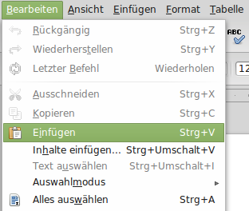
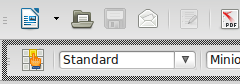
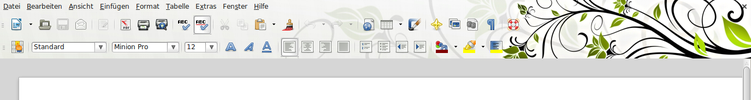
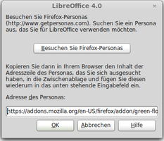

Anpassen
Dieser Artikel wurde für die folgenden Ubuntu-Versionen getestet:
Ubuntu 16.04 Xenial Xerus
Ubuntu 14.04 Trusty Tahr
Zum Verständnis dieses Artikels sind folgende Seiten hilfreich:
 Um mit Libreoffice so effizient wie möglich arbeiten zu können, empfiehlt es sich, Bedienung und Oberfläche an die eigenen Bedürfnisse anzupassen. Häufig genutzte Wege sollten möglichst kurz sein, Tastaturkürzel, Symbol- und Menüleisten sollten daher entsprechend angepasst werden. Darüber hinaus kann ein Theme verwendet werden.
Um mit Libreoffice so effizient wie möglich arbeiten zu können, empfiehlt es sich, Bedienung und Oberfläche an die eigenen Bedürfnisse anzupassen. Häufig genutzte Wege sollten möglichst kurz sein, Tastaturkürzel, Symbol- und Menüleisten sollten daher entsprechend angepasst werden. Darüber hinaus kann ein Theme verwendet werden.
Tastaturkürzel ("Shortcuts")¶
Über Tastaturkürzel werden Funktionen des Programms direkt aufgerufen. Man spart dadurch den Weg über die Menü- oder Symbolleisten. Wer bestimmte Funktionen regelmäßig verwendet, wird sich schnell an Tastenkombinationen gewöhnen. Die wohl am meisten verwendete Funktion ist die zum Kopieren und Einfügen ("copy and paste"): Strg + C und Strg + V .
|  |
| In den Menüleisten werden die Tastaturkürzel hinter dem jeweiligen Menüpunkt angezeigt. |
Änderungen an den bestehenden Tastaturkürzeln können über den Menüpunkt "Extras -> Anpassen", im Dialog unter dem Reiter "Tastatur", durchgeführt werden. Im unteren Bereich sind die einzelnen Funktionen aufgelistet, wobei sich die Sortierung an der der Menüleisten orientiert, z.B. am "Bearbeiten"-Menü. Um eine Funkion einem Tastaturkürzel zuzuordnen, muss erst der "Bereich" im Feld links unten und die Funktion rechts unten ausgewählt werden. Dann markiert man im Menü oben die gewünschte Tastenkombination und drückt die Schaltfläche "Ändern". Auch Tastaturkürzel zu Makros können eingerichtet werden.
Symbol- und Menüleisten anpassen¶
Auch die Symbol- und Menüleisten können über das Menü "Extras" -> "Anpassen" geändert werden. So kann die Anordnung der Menüpunkte in der oberen Menüleiste, aber auch die Anordnung der Symbole in den Symbolleisten geändert werden. Ausgeblendete Symbolleisten kann man über den Menüpunkt "Ansicht -> Symbolleisten" hinzuschalten.
|  |
| Über den Strich auf der linken Seite kann jede Symbolleiste beliebig platziert werden. |
Schriftgröße der Menüleiste anpassen¶
Empfindet man insbesondere bei hochauflösenden Bildschirmen die Menüschrift als zu klein, kann deren Schriftgröße angepasst werden:
Dafür geht man in der Menüleiste auf "Extras -> Optionen -> LibreOffice -> Ansicht -> Skalierung" die Prozentzahl editieren oder durch Klick auf die Pfeiltasten einstellen. Mit "OK" bestätigen.
Symbole ändern¶
Verwendete Symbole können komplett gegen einen anderen Satz ausgetauscht werden. Folgende Symbolsätze stehen zur Verfügung [1]:
libreoffice-style-breeze (seit Ubuntu 16.04)
libreoffice-style-crystal (universe)
libreoffice-style-hicontrast (universe)
libreoffice-style-human (Standard bei Ubuntu)
libreoffice-style-oxygen (universe, Standard bei Kubuntu)
libreoffice-style-galaxy (universe, LibreOffice-Standard)
libreoffice-style-sifr (universe)
libreoffice-style-tango
 mit apturl
mit apturl
Paketliste zum Kopieren:
sudo apt-get install libreoffice-style-breeze libreoffice-style-crystal libreoffice-style-hicontrast libreoffice-style-human libreoffice-style-oxygen libreoffice-style-galaxy libreoffice-style-sifr libreoffice-style-tango
sudo aptitude install libreoffice-style-breeze libreoffice-style-crystal libreoffice-style-hicontrast libreoffice-style-human libreoffice-style-oxygen libreoffice-style-galaxy libreoffice-style-sifr libreoffice-style-tango
Nach der Installation kann der gewünschte Symbolsatz über "Extras -> Optionen -> LibreOffice -> Ansicht -> Symbolgröße und Schriftstil" ausgewählt werden.
Themes¶
|  |
| LibreOffice mit dem Firefox-Theme "Green Floral" |
LibreOffice kann seit Version 4.x die Themes  ("Personas") von Mozilla Firefox verwenden. Man installiert neue Themes über den Menüpunkt "Extras" -> "Optionen", "LibreOffice" -> "Personalisierung".
("Personas") von Mozilla Firefox verwenden. Man installiert neue Themes über den Menüpunkt "Extras" -> "Optionen", "LibreOffice" -> "Personalisierung".
|  |
| Der Link zum gewünschten Theme wird hier eingefügt zum Aktivieren. |
Schnellstarter¶
LibreOffice bietet die Möglichkeit, das Programm vorab in den Arbeitsspeicher zu laden. Während dies den Systemstart kurz verzögert, erfolgt der spätere Programmaufruf deutlich schneller. Dazu ist unter "Extras -> Optionen -> LibreOffice -> Arbeitsspeicher" die Option "Schnellstarter" zu aktivieren.
Problembehebung¶
Unscharfe Darstellung der Menüs¶
Sollten die Menüleisten der Office-Anwendungen unscharf dargestellt werden, während die Darstellung des Desktops und anderer Programme scharf ist, so ist wahrscheinlich die Skalierung der Darstellung von LibreOffice verstellt. Diese kann man über den Punkt "Extras -> Optionen -> LibreOffice -> Ansicht" wieder auf "100%" zurücksetzen.
 Übersichtsartikel
Übersichtsartikel- Erstellt mit Inyoka
-
 2004 – 2017 ubuntuusers.de • Einige Rechte vorbehalten
2004 – 2017 ubuntuusers.de • Einige Rechte vorbehalten
Lizenz • Kontakt • Datenschutz • Impressum • Serverstatus -
Serverhousing gespendet von